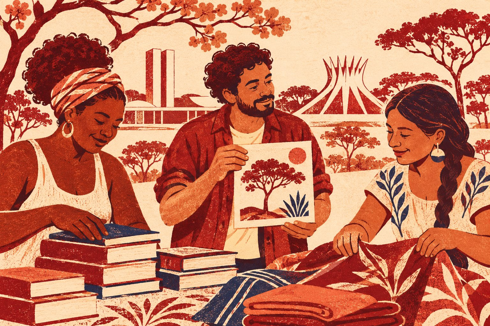

Encontre orientações para chegar a Brasília, buscar trabalho e acessar apoio.
BRASÍLIA, DF · ACOLHIMENTO E INTEGRAÇÃO
Recomeçar em Brasília fica mais fácil em rede.
A Guaramo Solidário é uma rede de acolhimento e integração para pessoas migrantes e refugiadas no Distrito Federal. Encontre orientações para quem está chegando e conheça o trabalho da rede.

Como podemos ajudar você?
Veja as frentes de voluntariado e escolha onde quer colaborar.
Encontre opções para doar, oferecer uma vaga ou propor uma parceria.
Conheça a mostra virtual, veja a agenda e envie uma obra para avaliação.
A REDE NO DISTRITO FEDERAL
Acolhimento na prática
A Guaramo Solidário atua com pessoas migrantes e refugiadas no Distrito Federal. Em parceria com o Instituto Promundo, a rede criou a Cartilha Andanças com a participação de pessoas que vivem a experiência da migração.
Conhecer a rede no ACNURCartilha Andanças
Um guia para quem está chegando ao DF, com orientações sobre documentação, moradia, educação, saúde e trabalho.
Consultar a Cartilha AndançasNA IMPRENSA
Como nasceu a Guaramo Solidário
Durante a pandemia, a artista e professora venezuelana Damelis Castillo começou a conectar famílias recém-chegadas ao Distrito Federal com pessoas dispostas a doar alimentos e roupas. Amigos ajudavam nas entregas. Com o tempo, famílias acolhidas passaram a orientar quem acabava de chegar e a compartilhar oportunidades de trabalho.
Em julho de 2021, o Correio Braziliense registrou que a rede apoiava cerca de 270 famílias.
Correio Braziliense ·
Ler a reportagem no Correio Braziliense